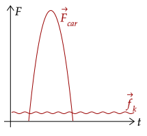

So far, we have only dealt with impulse done by only one force, being the average force. Now, we deal with impulse done by multiply forces.
Like the net force, the net impulse is the sum of the impulse generated by each of the forces.
We may also write out the net impulse as the impulse done by the net force, as shown.
Like how if there is no net force that there doesn't mean no force is acted onto the object, if there is no net impulse, it doesn't mean no impulse is acted onto the object.
Exercise 1
The airtime of an athlete is the amount of time spent in air. An airtime of 1.00s is considered elite. Starting from rest, what force exerted on the ground for 30.0ms is needed for a 70.0kg athlete to achieve this feat?
Solution
We first compute for the velocity needed to have an airtime of 1.00s. Of course, we use kinematic equations.
This gives us the final velocity. Now, starting from rest, the initial velocity is 0m/s; thus, this is the change in velocity. Thus, the net impulse on the object causes this overall change in velocity.
Looking at the problem, we want the force exerted on the ground; the net force on the athlete is the force on the ground and the weight, which we set as negative.
Substituting this, we can solve for the force on the floor.
This gives us the force on the floor is 1830N. This is about three times the athlete's weight, which is 686N.
One thing to note about the net impulse is that during a collision it is greatly approximated by the force between the two objects. For example, during a car crash, the force acting on one of the cars is much greater than that of, say, kinetic friction of the brakes.

Here, we can see that the force of the car crashing into the other car is much, much greater than the kinetic friction. Thus, we can approximate the impulse via just getting the impulse of that force.
Such forces are called "impulsive" forces. Mathematically, we can write it as follows, using the ≪ symbol. This symbol basically just says that the force is "much less than" the other force. We write it out like . With this, we approximate the net impulse to just be that of the impulsive force.
The graph above is a force-time graph, and it shows us that the total force acting on an object may not be constant over time. Thus, in our next tutorial, we see how to treat this.